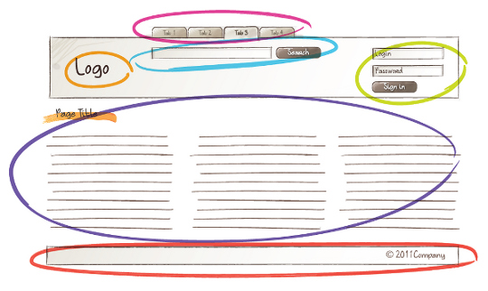
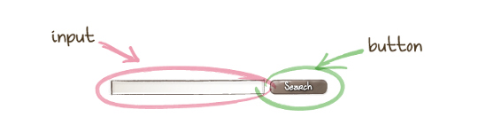

Les préprocesseurs CSS
(et pourquoi c'est génial)
Katia Moreira
MMI 2 - 08/03/2022 🦸♀️
Présentation
-
Katia Moreira
DUT SRC 2010-2012
IMAC 2012-2013
Gobelins 2013-2015 - From 👩🎓 to 👩🏫
-
Intégratrice web / développeuse front-end
chez Happyculture
Plan du cours
- 📋 Introduction aux préprocesseurs
- 🔎 Revue des fonctionnalités du préprocesseur SASS
- 👌 Bonnes pratiques
1. Introduction aux préprocesseurs
Un préprocesseur c'est quoi ?
- Outil permettant d'ajouter des fonctionnalités à CSS
- Code d'entrée → 🤖 → Code de sortie ↪️ code intelligible pour le navigateur
Un préprocesseur c'est quoi ?
- préprocesseurs / postprocesseurs
-
préprocesseur :
Langage du préprocesseur (.scss, .sass, .less...) → 🤖 → .css -
postprocesseur :
.css → 🤖 → .css
Un préprocesseur c'est quoi ?
Les postprocesseurs sont toujours utilisés mais souvent inclus au sein de tâches automatisées (on verra ça la prochaine fois...)
Un préprocesseur c'est quoi ?
Les préprocesseurs sont eux aujourd'hui indispensables pour améliorer la productivité 🚀 et la maintenabilité 🛠 d'un site.
Un préprocesseur c'est quoi ?
Un préprocesseur c'est quoi ?
Préprocesseur le plus répandu 🥇
Les différentes syntaxes de SASS
SASS : nom de l'outil qui possède 2 syntaxes :
- .scss et .sass
Les différentes syntaxes de SASS
La syntaxe SASS est plus éloignée de la syntaxe originelle CSS
-
En SASS (fichier .sass)
.error border: solid #FF0000 1px; color: #FF0000; -
En SCSS (fichier .scss)
.error { border: solid #FF0000 1px; color: #FF0000; }
Les différentes syntaxes de SASS
La syntaxe SASS est plus éloignée de la syntaxe originelle CSS
-
En SASS (fichier .sass)
.error border: solid #FF0000 1px; color: #FF0000; -
En SCSS (fichier .scss) ✅
.error { border: solid #FF0000 1px; color: #FF0000; }
Mais finalement SASS à quoi ça sert ? 🤔
- Faire du nesting
- Utiliser des conditions if/else
- Faire des boucles
- Utiliser des variables
- Importer des fichiers
→ utiliser les fonctionnalités d'un langage de programmation en CSS 👍
Comment ça marche ?
Le compilateur transforme le code SCSS en CSS. On peut utiliser :
- une application graphique
Prepros, Codekit, Koala, Scout... - Un plugin présent dans notre éditeur de code
Sass autocompile (Atom), Sass Sublime (Sublime Text), Live Sass Compiler (VSCode) - Un taskrunner ou module bundler
gulp, grunt, webpack... - Un outil en ligne
Sassmeister - La ligne de commande
Place à la pratique ! 🎉
Place à la pratique ! 🎉
- Installer SASS : https://sass-lang.com/
Place à la pratique ! 🎉
Notre terrain de jeu :
un portfolio simple en one page
Télécharger le template
2. Fonctionnalités de SASS
Variables
$variable: <value>
$main-color: #72958A;
$secondary-color: #C88F9F;
$sans-serif-family: 'Poppins', Arial, sans-serif;
$container-width: 1280px;
On peut y stocker un nombre, une string, une couleur ou même une déclaration CSS en entier 🎉
Variables
Différences entre les variables CSS et SASS
:root {
--main-color: #FFD73E;
}
.title {
color: var(--main-color);
}
Variables
Différences entre les variables CSS et SASS
- Les variables SASS sont compilées et ne sont pas visibles dans le code final. Les variables CSS sont directement interprétées par le navigateur
- On peut faire varier la valeur des variables CSS
- On peut y accéder depuis le JS
💡 En savoir plus : https://css-tricks.com/difference-between-types-of-css-variables/
Variables
Différences entre les variables CSS et SASS
:root {
--container-width: 1280px;
}
@media all and (min-width: 1500px) {
:root {
--container-width: 1360px;
}
}
Variables
Interpolation de variables
.icon-#{$name} {
...
}
// ---
$sidebar-width: 250px;
.main {
width: calc(100% - #{$sidebar-width});
}
// ---
$property: 'radius';
$value: 4px;
.block {
border-#{$property}: $value;
}
@import
Séparer notre code en plusieurs fichiers .scss
@import '_variables.scss';
@import '_reset.scss';
@import '_fonts.scss';
@import '_layout.scss';
@import '_header.scss';
@import '_menu.scss';
@import '_hero.scss';
@import '_stats.scss';
@import '_projects.scss';
@import '_skills.scss';
@import '_contact.scss';
Imbrication
// Code SASS
.site-header {
nav {
ul {
li {
}
}
}
}
/* Rendu CSS */
.site-header nav ul li {
...
}
Imbrication
// Code SASS
.site-header {
nav {
@media screen and (min-width: 768px) {
display: block;
}
}
}
/* Rendu CSS */
@media screen and (min-width: 768px) {
.site-header nav {
display: block;
}
}
Mais c'est génial ! 😃
parfois...non 💩
Imbrication
L'imbrication c'est cool MAIS on n'en abuse pas 🙅♀️
➡️ pas plus de 3 niveaux d'imbrication
Commentaires
// Ce commentaire ne sera pas visible dans notre code CSS final.
/* Celui-ci en revanche oui. */
Sélecteur &
.menu__item {
a {
&::after {
content: '';
display: block;
width: 100%;
height: 4px;
}
&.is-active::after,
&:hover::after {
background-color: $secondary-color;
}
}
}
"Reprend" le sélecteur parent
Sélecteur &
// Code SASS
.menu__item {
a {
&::after {
...
}
}
}
/* Code CSS */
.menu__item a::after {
...
}
Sélecteur &
// Code SASS
a {
color: #000;
.blue-section & {
color: #0000FF;
}
}
/* Code CSS */
a {
color: #000;
}
.blue-section a {
color: #0000FF;
}
@extend et %placeholder
Permet à un sélecteur d'hériter des styles d'un autre
// Code SASS
.notif {
position: fixed;
top: 0; left: 0;
width: 100%;
padding: 15px 0;
background-color:#8FCDFF;
color: #004074;
}
.notif-error {
@extend .notif;
background-color: #FFB4B4;
color: #740000;
}
@extend et %placeholder
Permet à un sélecteur d'hériter des styles d'un autre
/* Code CSS */
.notif, .notif-error {
position: fixed;
top: 0;
left: 0;
width: 100%;
padding: 15px 0;
background-color: #8FCDFF;
color: #004074;
}
.notif-error {
background-color: #FFB4B4;
color: #740000;
}
@extend et %placeholder
%placeholder
// Code SASS
%notif {
position: fixed;
top: 0; left: 0;
width: 100%;
padding: 15px 0;
text-align: center;
}
.notif-error {
@extend %notif;
background-color: #FFB4B4;
color: #740000;
}
.notif-info {
@extend %notif;
background-color:#8FCDFF;
color: #004074;
}
@extend et %placeholder
%placeholder
/* Code CSS */
.notif-info, .notif-error {
position: fixed;
top: 0;
left: 0;
width: 100%;
padding: 15px 0;
text-align: center;
}
.notif-error {
background-color: #FFB4B4;
color: #740000;
}
.notif-info {
background-color: #8FCDFF;
color: #004074;
}
@extend et %placeholder
Ce qu'il faut retenir ✍
- Avec @extend on hérite des styles d'un sélecteur CSS
- Avec un %placeholder c'est la même chose sauf que le code de la classe étendue n'est pas visible dans le CSS final (et donc pas utilisable dans le HTML)
mixin et conditions
Pour centrer un élément on utilise fréquemment le code suivant :
.stats-item {
display: flex;
align-items: center;
justify-content: center;
}
Si on centre un élément de la même façon, ailleurs dans notre site, on va devoir répéter ces 3 lignes de code à chaque fois 😕
mixin et conditions
La mixin est là pour ça 🙌
@mixin center-flex {
display: flex;
align-items: center;
justify-content: center;
}
.stats-item {
@include center-flex;
}
On peut même compliquer un peu notre mixin pour faire en sorte qu'elle puisse centrer des éléments horizontalement, verticalement ou les 2...
mixin et conditions
On va utiliser les arguments et les conditions
(attention ça se complique un peu) 😉
@mixin center-flex($type: null){
display: flex;
@if $type == 'x' {
justify-content: center;
} @else if $type == 'y' {
align-items: center;
} @else {
align-items: center;
justify-content: center;
}
}
Mixins
Ce qu'il faut retenir ✍
// Déclarer une mixin avec la at-rule @mixin
@mixin ma-mixin {
...
}
// L'utiliser avec la at-rule @include
.selecteur {
@include ma-mixin;
}
Conditions
Ce qu'il faut retenir ✍
@if ...
@else if ...
@else ...
Mixins et @extend
⚠️ On peut parfois faire la même chose avec une mixin ou une règle @extend, mais le code produit n'est pas le même.
Mixin duplique un ensemble de règles alors que @extend duplique le sélecteur.
Mixins et @extend
Comment savoir si on doit utiliser une mixin ou une règle @extend ? 🤔
Vous avez besoin d'utiliser un ou des argument(s) ? ➡️ mixin
mis à part ça... il n'y a pas de règle 🤷♀️
Mixins et @extend
“ La différence principale entre les mixins et les extensions est qu’avec les mixins vous obtenez des règles dupliquées, alors qu’avec les extensions, vous obtenez des sélecteurs dupliqués. ”
Un autre point de vue : Sass: When To Use @mixin And When To Use @extend
Boucles
Avec SASS on peut également faire des boucles for
(et oui ça peut être utile)
// Code SASS
@for $i from 1 through 3 {
ul:nth-child(#{$i}) {
top: 10px * $i;
}
}
/* Code CSS */
ul:nth-child(1) {
top: 10px;
}
ul:nth-child(2) {
top: 20px;
}
ul:nth-child(3) {
top: 30px;
}
Boucles
Ce qu'il faut retenir ✍
@for $i from 1 through 3 {
// Boucle qui fait varier $i à 1, 2 puis 3
}
@for $i from 1 to 3 {
// Boucle qui fait varier $i à 1 puis 2
}
Fonctions
Une fonction se présente comme une mixin sauf qu'elle ne génère pas des règles CSS mais nous retourne une valeur
@function twice($value) {
$result: $value * 2;
@return $result;
}
.block {
width: twice(200) + px;
}
Fonctions
Ce qu'il faut retenir ✍
// Déclarer une fonction avec la at-rule @function
@function ma-fonction($arg) {
$result: ...
// Retourner un résultat avec la at-rule @return
@return $result;
}
// Utiliser la fonction
.selecteur {
width: ma-fonction(200);
}
Fonctions SASS
Ensemble de fonctions contenues
dans différents modules pré-existants :
- sass:color ✅
- sass:list
- sass:map ✅
- sass:math ✅
- sass:meta
- sass:selector
- sass:string
Fonctions SASS
sass:color
// Code à inclure au tout début d'un fichier sass
@use 'sass:color';
.block {
color: color.scale(#e1d7d2, $lightness: -30%); // darken
}
.block2 {
color: color.scale(#e1d7d2, $lightness: 30%); // lighten
}
// Retourne la luminosite d'une couleur (de 0% à 100%)
color.lightness(#e1d7d2);
// Fonctions globales
.block3 {
color: rgba(#FF0000, 0.5);
}
Fonctions SASS
sass:math
@use 'sass:math';
// Retourne un nombre aléatoire entre 1 et 10
math.random(10);
// Arrondi à l'entier inférieur
math.floor(2.5);
math.ceil(4.2);
math.max(1px, 4px);
math.$pi;
Fonctions SASS
sass:map
@use 'sass:map';
$icons: (
music: ‘\f001’,
search: ‘\f002’,
heart: ‘\f003’
);
@each $name, $value in $icons {
.icon-#{$name}::before {
content: $value;
}
}
Exercices 🤓
Exercice 1 🤓
Objectif : créer une fonction qui éclairci / obscurci une couleur en fonction de sa luminosité
- Créer une fonction hoverAlternateColor qui prends en paramètre une couleur
- Si sa luminosité est inférieure à 25%, retourner une couleur 20% plus claire
- Sinon retourner une couleur 20% plus sombre
- Montrer un exemple d'utilisation de la fonction
-
Utiliser les fonctions SASS suivantes :
color.scale($color, $lightness); color.lightness($color);
Exercice 1 🤓
Code final
@use 'sass:color';
@function hoverAlternateColor($color) {
$result: '';
@if (color.lightness($color) < 25%) {
$result: color.scale($color, $lightness: 20%);
} @else {
$result: color.scale($color, $lightness: -20%);
}
@return $result;
}
a {
color: #000;
&:hover {
color: hoverAlternateColor(#000);
}
}
Exercice 2 🤓
Objectif : reproduire l'animation suivante
Exercice 2 🤓
- Faire une boucle de 4 itérations
-
A chaque tour de boucle
- Créer une fonction d'animation à l'aide de @keyframes qui utilise la fonction SASS random
- Appliquer cette animation à l'élément de la boucle
- Spoiler :
@keyframes stats-item-animation {
100% {
transform: translate(math.random(10) + px, math.random(10) + px);
}
}
Exercice 2 🤓
Code final
@use 'sass:math';
@for $i from 1 through 4 {
@keyframes stats-item-animation-#{$i} {
100% {
transform: translate(math.random(21) + 9px, math.random(21) + 9px);
}
}
.stats-item:nth-child(#{$i}) {
animation: stats-item-animation-#{$i} 2.6s infinite;
animation-delay: $i * 0.2s;
animation-direction: alternate;
}
}
Exercice 2 🤓
Si on va un peu plus loin...
@use 'sass:math';
@function getSign($randNumber) {
@if $randNumber == 1 {
@return -1;
}
@return 1;
}
@for $i from 1 through 4 {
@keyframes stats-item-animation-#{$i} {
100% {
transform: translate((math.random(21) + 9px) * getSign(math.random(2)), (math.random(21) + 9px) * getSign(math.random(2)));
}
}
.stats-item:nth-child(#{$i}) {
animation: stats-item-animation-#{$i} 2.6s infinite;
animation-delay: $i * 0.2s;
animation-direction: alternate;
}
}
3. Bonnes pratiques
Attention à la surimbrication
Les risques : 💥
- Fichier CSS lourd
- Moins performant
- Difficile à maintenir
Attention à la surimbrication
➡️ "Inception Rule" : pas plus de 3 niveaux d'imbrication
mixins utiles
- Gestion des fonts et tailles des textes
- Centrage des éléments
- Media queries
mixins utiles
Librairie SASS : @include-media
$breakpoints: (phone: 320px, tablet: 768px, desktop: 1024px);
.block {
@include media(">phone", "<=tablet") {
width: 50%;
}
}
Organisation des fichiers
Pattern 7-1
scss/
|– abstracts/
|– base/
|– components/
|– layout/
|– pages/
|– themes/
|– vendors/
`– main.scss
Les composants : OOCSS
OOCSS : Oriented Object CSS
Les composants : OOCSS
OOCSS introduit 2 grands principes :
-
Séparation de la structure et de l’apparence
On utilise des classes, on ne cible pas des éléments HTML -
Séparation du conteneur et du contenu
On peut utiliser nos composants dans n'importe quel contexte
Bootstrap repose par exemple sur OOCSS
Les composants : OOCSS
Comment on fait ?
En amont du project on repère les éléments communs ou répétés dans nos pages 👀 pour en faire des composants
A quoi ça sert ?
A gagner en productivité 🚀 et en maintenabilité 🛠
Les composants : OOCSS
Introduction à BEM
BEM : Block Element Modifier
Introduction à BEM
BEM : Block Element Modifier
.block__element--modifier
.search-form { }
.search-form__input { }
.search-form__btn { }
.search-form__btn--light { }
Introduction à BEM
BEM : Block Element Modifier
.search-form {
&__input {
width: 200px;
}
&__btn {
background: blue;
&--light {
background: white;
}
}
}
Compiler son SASS... et plus !
Avec les taskrunners
Grunt, gulp, brunch...
Avec un module bundler
Webpack, browserify...
Liens utiles
Merci pour votre attention 👩💻👨💻 !
À la prochaine 👋
Une question ?
Twitter @kaymorey
Linkedin
bonjour@katiamoreira.fr
https://cours-sass.vercel.app/